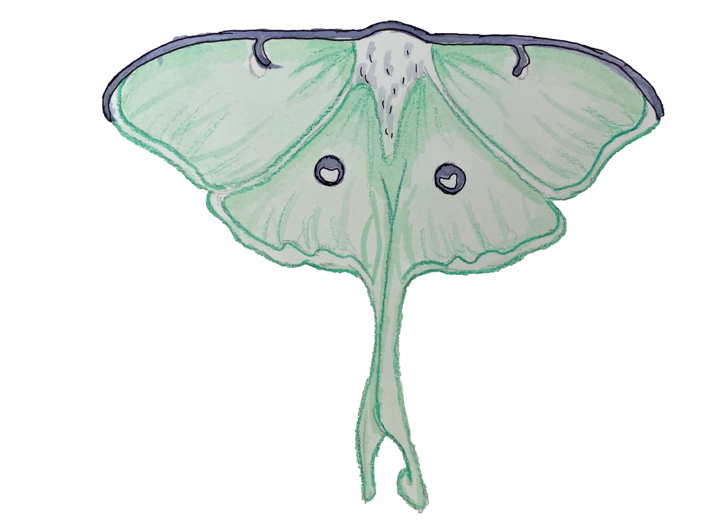

Luna Moth
75-115 MM
Deciduous hardwood forests in eastern North America
Eastern North America
Luna moths are a sea-foam green to yellow color, and long tails, is one of the most spectacular moths found in North America. The name is derived from Luna, the Roman moon goddess. Luna moths are considered saturniid moths, referring to the use of wing patterns as a defense mechanism against predators. Like most moths, Luna moths are predominately active at night but sightings during daylight hours do occur. Luna moths are most likely to be found in forested areas, commonly deciduous woodlands, but can be attracted to well-lighted areas in the evening.